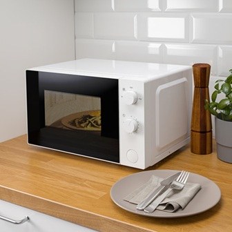
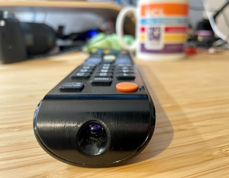
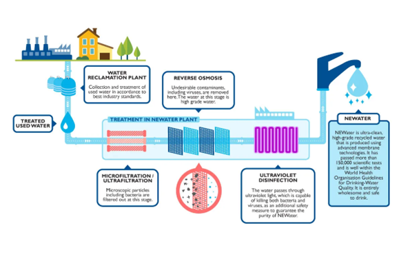
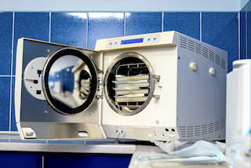

Electromagnetic waves and their usage in life
Radiowave
Radiowaves can be used for communication
One example can be our phones when texting
another could also be radios themselves
Microwave
Microwaves are well...used for microwaves

Infra-red Radiation
Remote controls use infra-red waves to turn on the tv

Visible Light
And light...let's us see
Ultraviolet Radiation
Ultraviolet is used for water treatment
The sun also radiates UV waves

X-Ray
X-ray is used for scanning baggages for illegal items
It can also be used for medical scanning
Gamma Ray
And lastly, Gamma Rays are used for sterilizing medical equipments
It is also used for cancer treament
